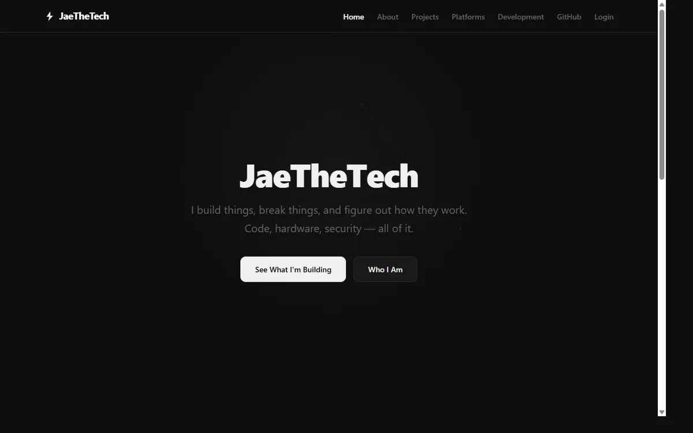
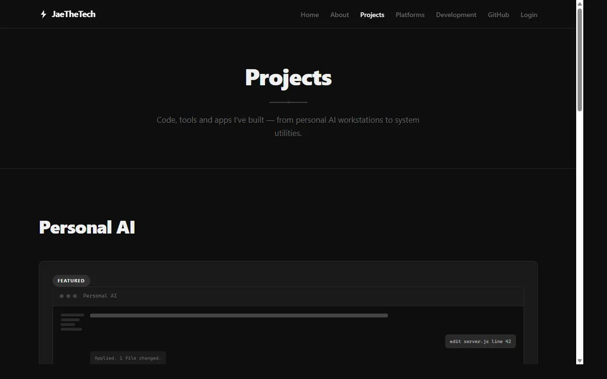

Project · Personal technical site
JaeTheTech.
A personal site for technical writing and software experiments, written in plain HTML, CSS and JavaScript with a small Cloudflare Worker behind it for passwordless sign-in. It is also where the Personal AI project is described.
- Status
- Active · live at jaethetech.com
- Role
- Solo developer (as stated on the site)
- Stack
- HTML, CSS, JavaScript, Cloudflare Workers and KV
- Source
- Public repository, all rights reserved
Overview
What the project is.
The site has pages for projects, a development roadmap, platforms and an about page, plus a sign-in area with a dashboard and an admin page. The part that is most relevant to employers is the sign-in backend, a single Cloudflare Worker in the repository.
The channel and content side of JaeTheTech is supporting creative work. This page focuses on the engineering.
Engineering
What the Worker does.
Read from the public repository (worker/auth-worker.js and wrangler.toml).
Passwordless sign-in
Routes for sending and verifying one-time email codes, sign-up, and a GitHub sign-in flow with a short-lived state value.
Sessions and roles
Session tokens, a user role route and staff add, remove and list routes, all stored in Cloudflare KV.
Abuse limits
A rate limit of 10 requests per 15-minute window, and expiring entries for codes, sessions and sign-in state.
Not verified by me: whether these routes have automated tests, and whether the email and GitHub sign-in settings are configured in production. The repository has no test files or workflows.
Decisions
Why this architecture.
My reasoning, based on the repository and the text of the site itself. It is not a claim that this approach is better than a framework.
Plain HTML, CSS and JavaScript
The site is a small set of mostly static pages with little shared state, so a build step or UI framework would add maintenance without much benefit. The trade-off is repeated markup across pages and more manual work as the site grows.
A Worker instead of a server
Sign-in needs a backend, but running a server for a small site means ongoing hosting and patching. A Worker with KV keeps the backend small and inexpensive. The trade-off is Cloudflare lock-in and KV's eventual consistency.
Evidence
Screenshots of the site.
Real captures of jaethetech.com taken for this page.


Go deeper
Related project.
Explore the site